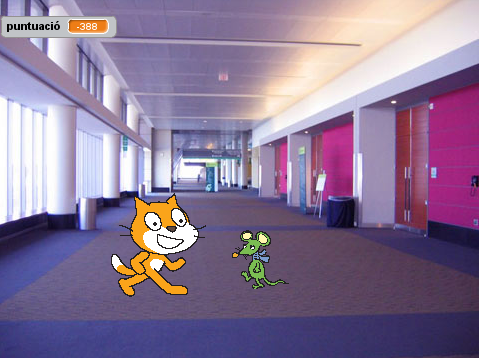

Fèlix i Herbert
Introducció:
Construirem un joc on
el gat Fèlix i el ratolí
Herbert jugen a atrapar. Vosaltres controlareu en Herbert amb el ratolí i heu d'intentar evitar que en Fèlix us atrapi. Quant més temps eviteu que us atrapi més punts guanyareu, però no us deixeu agafar perquè perdreu punts!

PAS 1: En Fèlix segueix el punter del ratolí
- Creeu un nou projecte.
- Feu doble clic al escenari i canvieu a la pestanya dels Fons, llavors seleccioneu el fons indoors/hall. Suprimiu el fons blanc original.
- Canvieu el nom del personatge per Fèlix.
- Assegureu-vos que en Fèlix només miri a esquerra i dreta utilitzant el bloc "fixa la rotació a"
- Creeu aquest programa:
Proveu el projecte
Feu clic a la bandera verda.
En Fèlix, segueix el punter del ratolí? Quan es mou, us sembla com si caminés? Es mou a una velocitat adequada?
PAS 2: En Fèlix persegueix en Herbert
A continuació volem que en Fèlix persegueixi en Herbert, enlloc del punter del ratolí.
- Creeu un nou personatge escollint animals-mouse1.
- Canvieu el nom del personatge per Herbert.
- Editeu el vestit i feu-l'ho més petit que el d'en Fèlix.
Proveu fent 6 clics al botó encongir.
- Assegureu-vos que en Herbert només miri a esquerra i dreta utilitzant el bloc "fixa la rotació a"
- Doneu-li aquest programa a en Herbert:
Proveu el projecte
Feu clic a la bandera verda.
En Herbert, segueix el punter del ratolí? En Fèlix persegueix al Herbert?
PAS 3: En Fèlix diu quan ha atrapat en Herbert
Volem que en Fèlix sàpiga quan ha atrapat en Herbert i que ens ho digui.
- Modifiqueu el programa d'en Felix així:
Proveu el projecte
Feu clic a la bandera verda.
En Fèlix diu quan ha atrapat en Herbert?
PAS 4: En Herbert es converteix en un fantasma quan l'atrapen
En lloc de que en Fèlix digui quelcom, volem que en Herbert es converteixi en un fantasma quan l'atrapin.
- Canvieu el programa d'en Fèlix per tal d'enviar aquest missatge quan atrapi en Herbert.
- Importeu un nou vestit per en Herbert de fantasy/ghost2-a.
- Editeu-l'ho per fer-l'ho més petit.
N'hi hauria d'haver prou amb sis clics al botó encongir.
- Canvieu els noms dels vestits d'en Herbert de manera que vestit de ratolí s'anomeni 'viu' i el de fantasma 'fantasma'.
- Creeu un nou programa per tal de convertir en Herbert en un fantasma:
Proveu el projecte
Feu clic a la bandera verda.
Quan atrapeu en Herbert, es converteix en un fantasma?
En Fèlix fa els sons adequats en cada moment?
En Fèlix roman quiet prou temps per a que en Herbert es pugui escapar?
PAS 5: Actualitzar el marcador
Afegirem un marcador de manera que sabrem com de bé mantenim al Herbert en vida.
Començarem amb el marcador a zero i l'incrementarem una unitat cada segon. Si en Fèlix atrapa en Herbert, reduirem el marcador en cent unitats.
Creeu una variable per a totes les animacions fent clic a Variables en el menú de dalt, i anomeneu-la puntuació.
Creeu aquests dos programes a l'escenari
Proveu el projecte
Feu click a la bandera verda.
El marcador, augmenta una unitat per segon?
Quan en Fèlix atrapa en Herbert, el marcador disminueix cent unitats?
Què passa quan atrapeu en Herbert abans que el marcador arrivi a cent unitats?
Quan comenceu una nova partida, el marcador torna a zero?
Molt bé, heu acabat. Ara ja podeu gaudir del joc!
No us oblideu que podeu compartir el joc amb amics i familiars fent clic a Comparteix al menú.